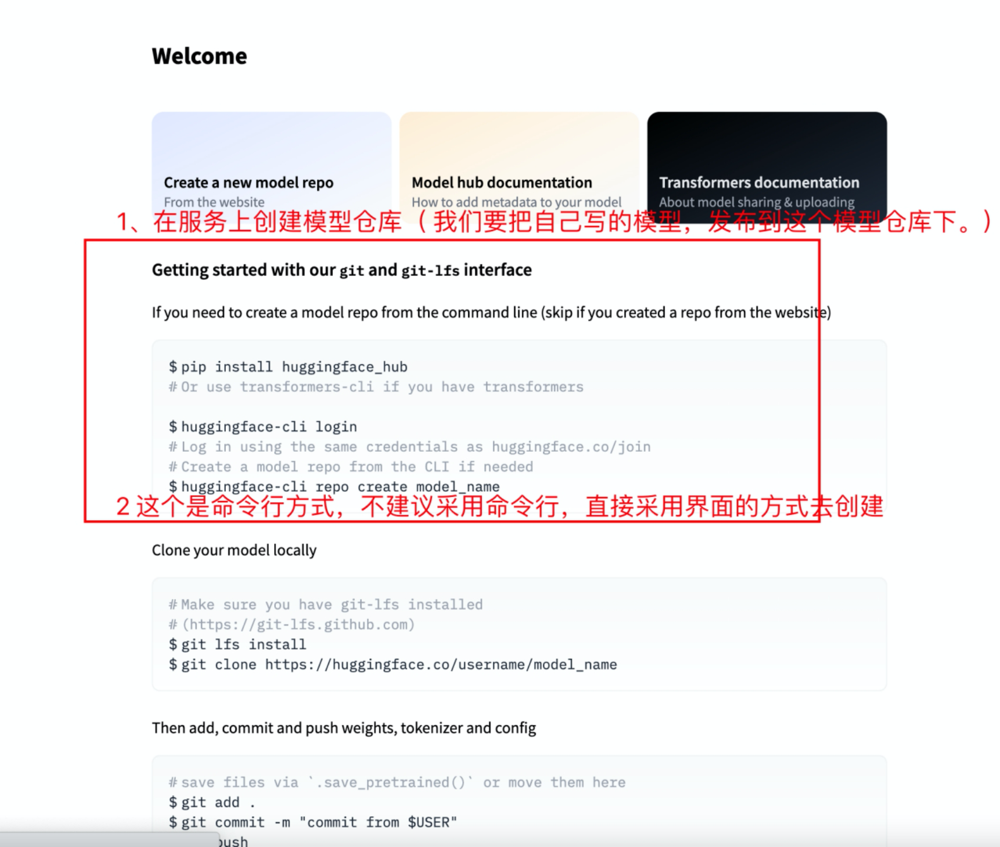

11 huggingface平台使用指南 old
学习目标¶
- 掌握huggingface平台使用
1 huggingface介绍¶
Huggingface总部位于纽约，是一家专注于自然语言处理、人工智能和分布式系统的创业公司。他们所提供的聊天机器人技术一直颇受欢迎，但更出名的是他们在NLP开源社区上的贡献。Huggingface一直致力于自然语言处理NLP技术的平民化(democratize)，希望每个人都能用上最先进(SOTA, state-of-the-art)的NLP技术，而非困窘于训练资源的匮乏。同时Hugging Face专注于NLP技术，拥有大型的开源社区。尤其是在github上开源的自然语言处理，预训练模型库 Transformers，已被下载超过一百万次，github上超过24000个star。Transformers 提供了NLP领域大量state-of-art的 预训练语言模型结构的模型和调用框架。
2 使用步骤¶
- 第一步: 在https://huggingface.co/join上创建一个帐户
- 第二步: 在可视化界面登陆用户
- 第三步: 在huggingface上创建模型仓库
- 第四步: 通过git把本地模型，上传到HuggingFace平台的模型仓库中
- 第五步: 通过git clone进行模型下载
- 第六步: 加载下载的模型
2.1 创建一个帐户¶
在https://huggingface.co/join上创建一个帐户

2.2 登录¶

2.3 在huggingface上创建模型仓库¶
- 在huggingFace平台上注册完毕后，会弹出欢迎页面： https://huggingface.co/welcome 该页面显示了详细的上传模型，下载模型的方法。
- 详细如下：

-
通过界面在huggingface上创建模型仓库
-
点击个人头像，点击创建模型命令【new Mode】

- 输入【自己名称】、【模型名称】
- 显示自己创建的模型
2.4 上传本地模型到平台¶
通过git把本地模型，上传到HuggingFace平台的模型仓库中
1 页面发布步骤介绍¶
2 git clone操作¶
先通过git clone操作把huggingface服务器上的文件目录给“拉”下来在本地路径下，执行如下命令：
# xxx/mymodel04 --> 这个是你在huggingface上创建的代码仓库, 根据自己的情况适当更换一下.
git clone https://huggingface.co/xxx/mymodel04
注意点:
-
在本地会出现一个mymodel04文件夹
-
在执行git clone之前确保本地文件夹是否已经存在mymodel04，避免本地文件被覆盖。或者把已经存在的mymodel04目录修改名字.
3 把我们要上传的模型文件copy到本地mymodel04文件夹中¶
- 先将目录先切换至mymodel04文件夹中
cd mymodel04
- 根据目录结构，选中把bert_finetuning_test目录下的模型文件上传到huggingFace平台，需要把bert_finetuning_test目录下的模型文件，copy到mymodel04目录下。
cp -r /root/transformers/examples/pytorch/text-classification/bert-base-uncased-finetuning .
4 上传本地mymodel04文件夹中的模型文件，到服务器mymodel04中¶
git add . # 把本地待上传的模型文件与hugging平台建立关联
git commit -m "commit from $USER" # 添加评注
git push # 向huggingface平台上传模型文件
注意点: git push 向服务器上传模型文件，需要两次输入密码
5 确认模型是否已经上传到HuggingFace平台上¶
2.5 通过git clone进行模型下载¶
git clone https://huggingface.co/xxx/mymodel4
2.6 加载下载的模型¶
import torch
from transformers import AutoModel, AutoTokenizer
# 网络加载
tokenizer = AutoTokenizer.from_pretrained('xxx/mymodel4')
model = AutoModel.from_pretrained('xxx/mymodel4')
index = tokenizer.encode("Talk is cheap", "Please show me your code!")
# 102是bert模型中的间隔(结束)符号的数值映射
mark = 102
# 找到第一个102的索引, 即句子对的间隔符号
k = index.index(mark)
# 句子对分割id列表, 由0，1组成, 0的位置代表第一个句子, 1的位置代表第二个句子
segments_ids = [0]*(k + 1) + [1]*(len(index) - k - 1)
# 转化为tensor
tokens_tensor = torch.tensor([index])
segments_tensors = torch.tensor([segments_ids])
# 使用评估模式
with torch.no_grad():
# 使用模型预测获得结果
result = model(tokens_tensor, token_type_ids=segments_tensors)
# 打印预测结果以及张量尺寸
print(result)
print(result[0].shape)
- 输出效果:
(tensor([[[-0.1591, 0.0816, 0.4366, ..., 0.0307, -0.0419, 0.3326],
[-0.3387, -0.0445, 0.9261, ..., -0.0232, -0.0023, 0.2407],
[-0.0427, -0.1688, 0.5533, ..., -0.1092, 0.1071, 0.4287],
...,
[-0.1800, -0.3889, -0.1001, ..., -0.1369, 0.0469, 0.9429],
[-0.2970, -0.0023, 0.1976, ..., 0.3776, -0.0069, 0.2029],
[ 0.7061, 0.0102, -0.4738, ..., 0.2246, -0.7604, -0.2503]]]), tensor([[-3.5925e-01, 2.0294e-02, -2.3487e-01, 4.5763e-01, -6.1821e-02,
2.4697e-02, 3.8172e-01, -1.8212e-01, 3.4533e-01, -9.7177e-01,
1.1063e-01, 7.8944e-02, 8.2582e-01, 1.9020e-01, 6.5513e-01,
-1.8114e-01, 3.9617e-02, -5.6230e-02, 1.5207e-01, -3.2552e-01,
...
1.4417e-01, 3.0337e-01, -6.6146e-01, -9.6959e-02, 8.9790e-02,
1.2345e-01, -5.9831e-02, 2.2399e-01, 8.2549e-02, 6.7749e-01,
1.4473e-01, 5.4490e-01, 5.9272e-01, 3.4453e-01, -8.9982e-02,
-1.2631e-01, -1.9465e-01, 6.5992e-01]]))
torch.Size([1, 12, 768])
3 小结¶
学习了通过微调脚本微调后模型的使用步骤:
-
第一步: 在https://huggingface.co/join上创建一个帐户
-
第二步: 在可视化界面登陆用户
-
第三步: 在huggingface上创建模型仓库
-
第四步: 通过git把本地模型，上传到HuggingFace平台的模型仓库中
-
第五步: 通过git clone进行模型下载
-
第六步: 加载下载的模型